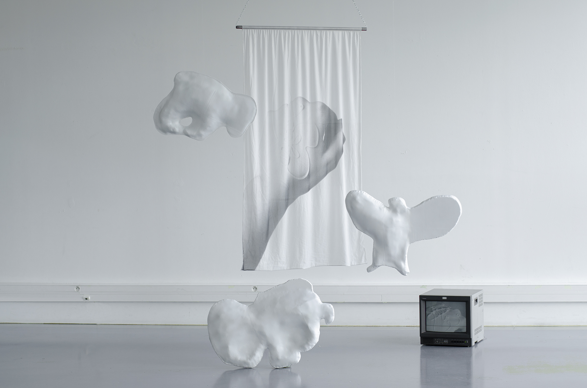
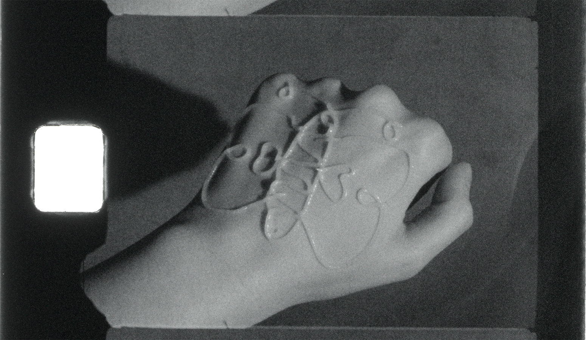
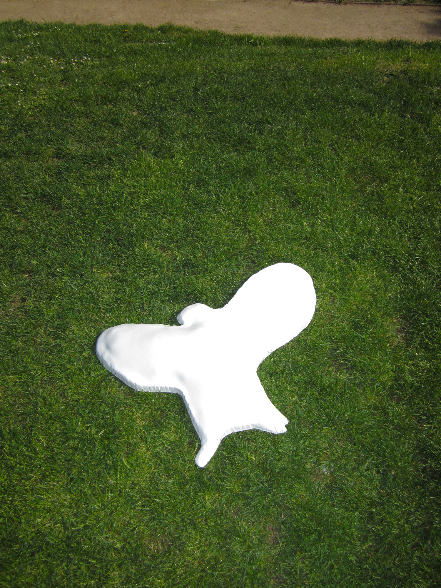
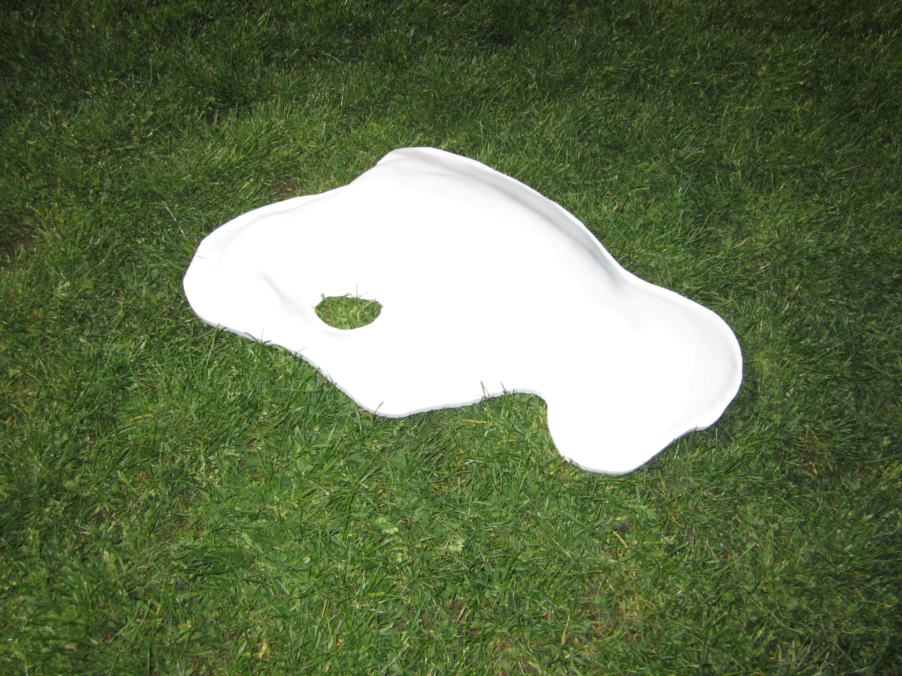
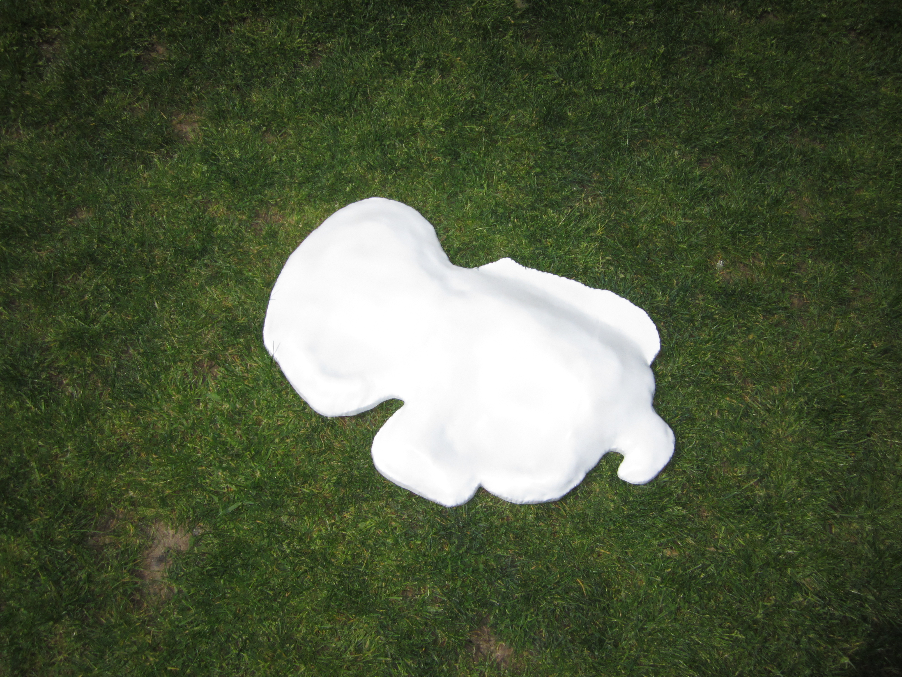

(fig.1)

(fig.2)

(fig.3)

(fig.4)

(fig.5)

Quand j’étais petite, le soir dans mon lit, avant de m’endormir et après m’avoir raconté une histoire, ma mère dessinait sur mes mains avec le tube de crème. Suivant l’histoire qui venait de se terminer, elle traçait le contour d’animaux, de fleurs…(fig.1)
Sur le dos de ma main, le filet de crème en léger relief esquissait tout un paysage dont les phalanges étaient les montagnes. Et je jouais à réinventer une histoire avant que la crème ait fondue, que le contour se déforme.(fig.2) Je créais des bêtes, des chimères mélangées au modelé des draps, aux ombres des jouets posés sur les étagères de ma chambre.
Ces volumes sont les chimères des dessins sur mes mains mélangés aux ombres de ma chambre.(fig.3,4,5)